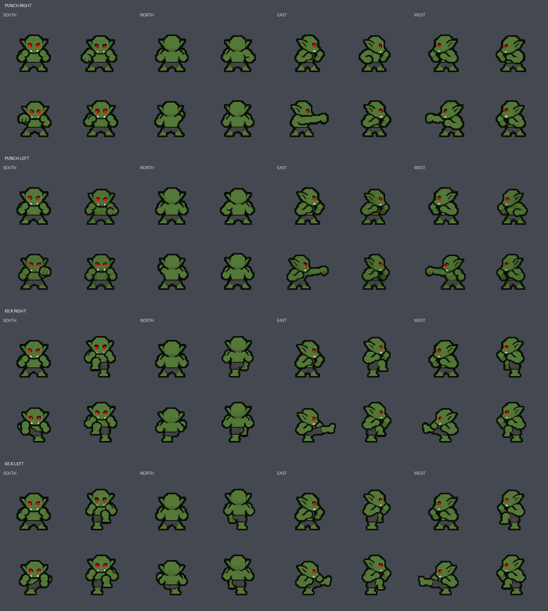

Separate left/right punches and kicks, with a shared guard and short legs. Each action has four directions and four frames. These are drawn-pose selections prepared for review; they have not been integrated into the game.
Animation needs JavaScript. All sprite frames are shown below.
